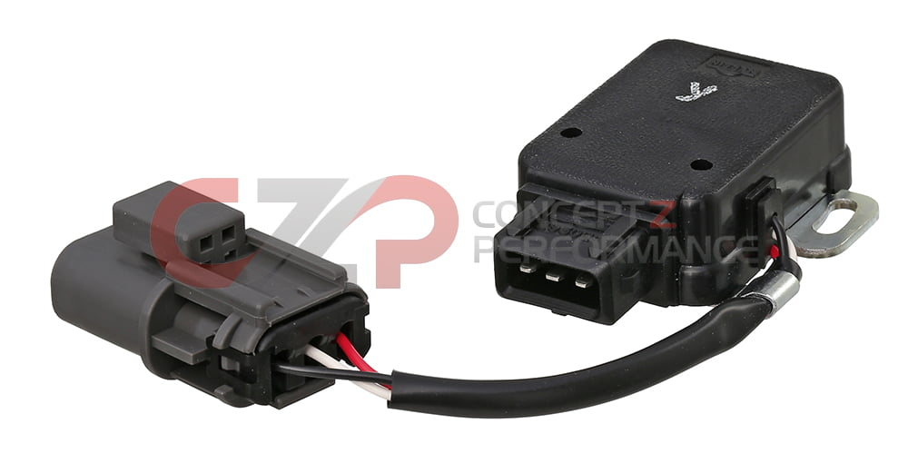

-
Cant do some sweet shit with EDIS. Also there is some stuff being developed atm for the Zrambis wrote: Why not go edis?89' Turbo-R.I.P. (scrapped)
87' NA all parts swapped from 89', Stance, 3.3 long block, hx35w, Injector Dynamics 1000cc, isky cams, pathfinder intake, front mount, megasquirt v3.57 w/MS3X
07 Frontier XE <----(turd) daily -
Sweet! Thanks for clearing that up man!. Im just going to put the resistor in line, not on the board. Im to scared to open it up atm lol. Now im not going to ask about the TPS wiring, Ill study the wiring schmatics in the FSMunless you really want to tell meBLOZ UP wrote: 60 degree signal, G/B - Green w/Black stripe, not G/O. It goes to pin 24, after being pulled up to 12v from 5v. That's the purpose of the resistor.
The G/W is the 360 degree signal, and is not currently used.
The other two are power and ground for the optical sensor itself. 89' Turbo-R.I.P. (scrapped)
89' Turbo-R.I.P. (scrapped)
87' NA all parts swapped from 89', Stance, 3.3 long block, hx35w, Injector Dynamics 1000cc, isky cams, pathfinder intake, front mount, megasquirt v3.57 w/MS3X
07 Frontier XE <----(turd) daily -
The TPS is easier. 3 wires, all can come from MS. MS provides the 5v reference, signal, and ground.
I can't remember the wire colors, but the ground should be obvious, and the FSM will let you know as well.
You need an automatic TPS though, the one with the 3 wire harness coming off of it. The switch portion of it is not used.BLOZ UP.com
It is not recommended to confirm proper installation by driving into walls or other barriers as this could cause personal injury or damage to the vehicle. -
I have a 3 wire plug. It does not have the 3 wire grey oval connector onto it. But the main plug is a 3 wire, thats what i was banking on lol. just have to disifer what 2 wires do what, grounds obvious.BLOZ UP wrote: The TPS is easier. 3 wires, all can come from MS. MS provides the 5v reference, signal, and ground.
I can't remember the wire colors, but the ground should be obvious, and the FSM will let you know as well.
You need an automatic TPS though, the one with the 3 wire harness coming off of it. The switch portion of it is not used.89' Turbo-R.I.P. (scrapped)
87' NA all parts swapped from 89', Stance, 3.3 long block, hx35w, Injector Dynamics 1000cc, isky cams, pathfinder intake, front mount, megasquirt v3.57 w/MS3X
07 Frontier XE <----(turd) daily -
[quote]Black 89Turbo wrote:I have a 3 wire plug. It does not have the 3 wire grey oval connector onto it. But the main plug is a 3 wire, thats what i was banking on lol. just have to disifer what 2 wires do what, grounds obvious.[/quote:34y980d7]Originally posted by BLOZ UP:34y980d7
The TPS should have ~6 wires total or 6 connections. 2-3 on the sensor itself and then a 3 wire harness coming out of it. The latter is what you need.BLOZ UP.com
It is not recommended to confirm proper installation by driving into walls or other barriers as this could cause personal injury or damage to the vehicle. -
The TPS should have ~6 wires total or 6 connections. 2-3 on the sensor itself and then a 3 wire harness coming out of it. The latter is what you need.
It is not a auto TPS. Just 3 wires to the sensor itself. does not have the 3 wire harness for the automatic stuff. What is latter?89' Turbo-R.I.P. (scrapped)
87' NA all parts swapped from 89', Stance, 3.3 long block, hx35w, Injector Dynamics 1000cc, isky cams, pathfinder intake, front mount, megasquirt v3.57 w/MS3X
07 Frontier XE <----(turd) daily -
[quote]BLOZ UP wrote: [quote=Black 89Turbo:2traphq1]I have a 3 wire plug. It does not have the 3 wire grey oval connector onto it. But the main plug is a 3 wire, thats what i was banking on lol. just have to disifer what 2 wires do what, grounds obvious.[/quote:2traphq1]Originally posted by BLOZ UP:2traphq1
The TPS should have ~6 wires total or 6 connections. 2-3 on the sensor itself and then a 3 wire harness coming out of it. The latter is what you need.[/quote:2traphq1]
Only 85-89 automatic cars have the extra wire harness.- VG30DET (HE341) 86 300ZX - 1982 280ZX Turbo - Headered NA 1986 300ZX 2+2 - 2000 Xterra - -
You need the one from an 85-89 automatic.Black 89Turbo wrote: It is not an auto TPS. Just 3 wires to the sensor itself. does not have the 3 wire harness for the automatic stuff. What is latter?

Don't hook up to the black box, as it's just a switch. It will give you "undesired" results. You need that 3 wire harness coming out to hook up to.
Or just run with MAPdot enrichment.BLOZ UP.com
It is not recommended to confirm proper installation by driving into walls or other barriers as this could cause personal injury or damage to the vehicle. -
Don't hook up to the black box, as it's just a switch. It will give you "undesired" results. You need that 3 wire harness coming out to hook up to.
Or just run with MAPdot enrichment.
gotcha. i was wondering if the tps was a "switch" style 0 or 100% or 0, 1,2,3,4,5% ect… Thanks for clearing that up. i found some of your old maps and ill start with them. I have nothing to start by besides that.89' Turbo-R.I.P. (scrapped)
87' NA all parts swapped from 89', Stance, 3.3 long block, hx35w, Injector Dynamics 1000cc, isky cams, pathfinder intake, front mount, megasquirt v3.57 w/MS3X
07 Frontier XE <----(turd) daily -
BLOZ UP-
Do you still have the writeup you did?89' Turbo-R.I.P. (scrapped)
87' NA all parts swapped from 89', Stance, 3.3 long block, hx35w, Injector Dynamics 1000cc, isky cams, pathfinder intake, front mount, megasquirt v3.57 w/MS3X
07 Frontier XE <----(turd) daily -
Bump, this would be helpful for me as well, have an MS2/PCB3.57 running extra 3.1.1 soon to be in my 84t, if you guys could repost the original articles that would be amazing. -
it would be awesome. I tried to get diagrams but never could.89' Turbo-R.I.P. (scrapped)
87' NA all parts swapped from 89', Stance, 3.3 long block, hx35w, Injector Dynamics 1000cc, isky cams, pathfinder intake, front mount, megasquirt v3.57 w/MS3X
07 Frontier XE <----(turd) daily -
What does *pin 36* run to with the stock coil? or is it not used?
89' Turbo-R.I.P. (scrapped)
87' NA all parts swapped from 89', Stance, 3.3 long block, hx35w, Injector Dynamics 1000cc, isky cams, pathfinder intake, front mount, megasquirt v3.57 w/MS3X
07 Frontier XE <----(turd) daily -
If you are using the MS coil driver, it connects to the coil.
Otherwise, it connects to the Nissan/Aftermarket coil driver.
I had good success with the Nissan coil driver (ignitor, I think the FSM calls it), since it is external and has it's own heat sink (at least on an 88t). I used 2.0ms as the dwell time, nothing else worked as well.BLOZ UP.com
It is not recommended to confirm proper installation by driving into walls or other barriers as this could cause personal injury or damage to the vehicle. -
Thats what im after. using the stock coil driver/ignitor. located on the driver side down by the dash. I dont want to run the MS coil driver b/c that involves takeing the computer apart making sure this is pinned and that aint pinned. How did you wire the ignitor and coil up?BLOZ UP wrote: If you are using the MS coil driver, it connects to the coil.
Otherwise, it connects to the Nissan/Aftermarket coil driver.
I had good success with the Nissan coil driver (ignitor, I think the FSM calls it), since it is external and has it's own heat sink (at least on an 88t). I used 2.0ms as the dwell time, nothing else worked as well.89' Turbo-R.I.P. (scrapped)
87' NA all parts swapped from 89', Stance, 3.3 long block, hx35w, Injector Dynamics 1000cc, isky cams, pathfinder intake, front mount, megasquirt v3.57 w/MS3X
07 Frontier XE <----(turd) daily

Copyright © 2006–. All rights reserved. Privacy Policy